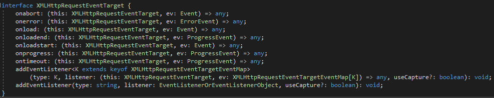
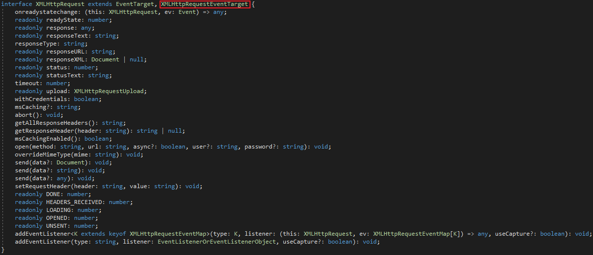

這也算是XMLHttpRequest中的Hello world吧，
下面的範例具有參考價值，說明了基本XMLHttpRequest技術使用方式。
其中說明也附在註解中，黃色部份為使用XMLHttpRequest技術必要寫的程式。
後端為
using System.Web.Mvc;
namespace WebApplication1.Controllers
{
public class HomeController : Controller
{
public ActionResult Index()
{
return View();
}
[HttpPost]
public ActionResult Index(int id, string name)
{
string result = "<p>" + "ID為" + id + ",NAME為" + name + "</p>";
return Content(result);
}
}
}
前端為
<script>
document.getElementById("mybutton").addEventListener("click", loadDoc);
function loadDoc() {
/*方法設定***********************/
var xhttp = new XMLHttpRequest();//宣告XMLHttpRequest物件
xhttp.onreadystatechange = function () {//如果readyState有被改變時
if (this.readyState == 4 && this.status == 200) {
//從後端回應的responseText內容放至result裡面
document.getElementById("result").innerHTML = this.responseText;
}
};
//設定open方法
xhttp.open("POST", "@Url.Action("Index")", true);
/*當決定使用POST方式時需設定Content-type="application/x-www-form-urlencoded"
，但無此設定預設似乎也可以
*/
xhttp.setRequestHeader("Content-type", "application/x-www-form-urlencoded");
// 宣告為 Ajax Request
xhttp.setRequestHeader("X-Requested-With", "XMLHttpRequest");
/*******************************/
/*觸發*/
xhttp.send("id=100&name=Tom");
}
</script>
另外列出XMLHttpRequest可用的屬性與方法有，
一、onreadystatechange屬性
為委派事件，當readyState屬性有變動時觸發。
二、readyState屬性
是數值，值從0~4代表不同的準備狀態，如下表。
| Value | State | Description |
| 0 | UNSENT | Client has been created. open() not called yet. |
| 1 | OPENED | open() has been called. |
| 2 | HEADERS_RECEIVED | send() has been called, and headers and status are available. |
| 3 | LOADING | Downloading; responseText holds partial data. |
| 4 | DONE | The operation is complete. |
三、response屬性
response屬性將會回傳body的內容，回傳的型態由responseType屬性決定。
四、responseText屬性
以字串的方式回傳body內容。
五、responseType屬性
用來決定response屬性所回傳的body內容型態為何，
其型態可為空字串、arraybuffer、blob、document、json、text。
六、responseURL屬性
取得response body 內容的URL。
七、responseXML屬性
目前不支援。
八、status屬性
九、statusText屬性
跟status屬性相同，只不過是以字串來表示。
十、timeout屬性
單位以毫秒表示，當request超過多少時間時，則終止request。
十一、upload屬性
為XMLHttpRequestUpload介面的upload屬性其用來監視檔案上傳進度與狀態，
XMLHttpRequestUpload介面又是繼承了XMLHttpRequestEventTarget介面，

所以upload屬性可以操作以下七種EventListener
1、onloadstart
2、onprogress
3、onabort
4、onerror
5、onload
6、ontimeout
7、onloadend
十二、withCredentials屬性
以boolean值表示，指出是否可允許cross-site Access-Control requests
十三、abort()方法
終止XMLHttpRequest要求。
十四、getAllResponseHeaders()方法
取得所有Header內容。
十五、getResponseHeader()方法
取得指定Header名稱的內容，如：
getResponseHeader("Content-Type")
十六、open()方法
準備一個request，語法為
XMLHttpRequest.open(method, url)
XMLHttpRequest.open(method, url, async)
XMLHttpRequest.open(method, url, async, user)
XMLHttpRequest.open(method, url, async, user, password)
十七、overrideMimeType()方法
對來自server的回應作Overrides the MIME type動作。
十八、send()方法
用來傳送XMLHttpRequest，語法為
XMLHttpRequest.send()
XMLHttpRequest.send(ArrayBuffer data)
XMLHttpRequest.send(ArrayBufferView data)
XMLHttpRequest.send(Blob data)
XMLHttpRequest.send(Document data)
XMLHttpRequest.send(DOMString? data)
XMLHttpRequest.send(FormData data)
十九、setRequestHeader()方法
故名思意，就是設定request的header，語法為
setRequestHeader(header, value)
二十、監視頁面下載狀態的Event handlers
跟XMLHttpRequest.upload屬性相對，
XMLHttpRequest物件可以用來監視頁面的下載狀態。

XMLHttpRequest物件也繼承了XMLHttpRequestEventTarget介面，
所以XMLHttpRequest物件也擁有操作以下七種EventListener
1、onloadstart
2、onprogress
3、onabort
4、onerror
5、onload
6、ontimeout
7、onloadend
參考資料：
XMLHttpRequest Living Standard — Last Updated 28 September 2016